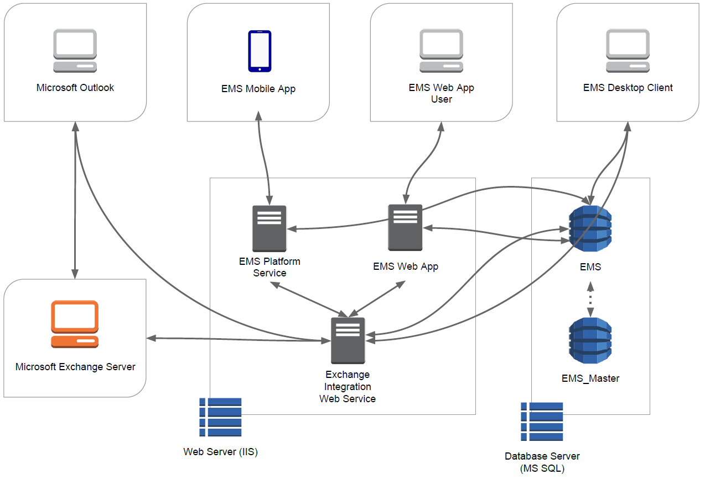
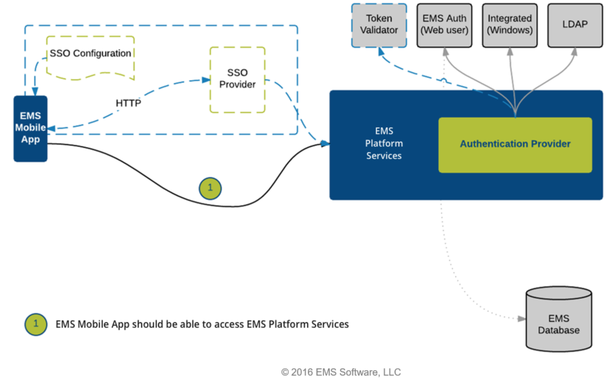

The diagram below shows how EMS Everyday Applications interact with {{product_dtc}}, your web and database servers, and Microsoft® Exchange.

The diagram below shows the authentication process for {{product_mobile}}.

The {{product_mobile}} consists of an iOS or Android native app deployed on users' smartphones, the {{product_mobile}} API which sits on a web server, and the EMS database. The App connects to the API, which authenticates users and talks to the EMS database.
See Also: